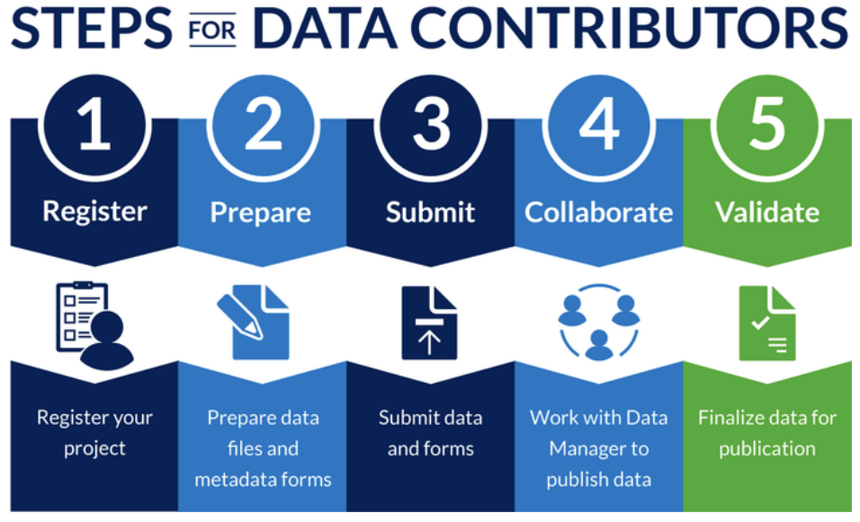

Contributing data¶
When data acquistion and analysis is done, it is time to contribute your data to the right repository and ensure correct preservation and reuse of your data.
This page describes the process for contributing metadata and data from appropriate NSF OCE funded projects to the BCO-DMO data system. The documents/forms used in this section are Rich Text Format (.rtf) files, which are compatible with any word processing application.
If you would like to discuss management of data associated with an existing or proposed project, please contact us (info@bco-dmo.org). For funded projects, please be prepared to provide your NSF OCE award number.
Evaluate¶
First determine if BCO-DMO is the right repository for your data. BCO-DMO provides data management services at no additional cost to projects funded by NSF’s Division of Ocean Sciences’ Biological and Chemical Oceanography Sections and the Division of Polar Programs’ Antarctic Organisms & Ecosystems Program.
BCO-DMO staff members work with researchers funded by these NSF programs to ensure that data and metadata contributed are in compliance with the current NSF OCE Sample and Data Policy.
Below are other suggested data management centers if your project is not funded by an NSF section that BCO-DMO serves:
- For NSF-sponsored Physical Oceanography projects, investigators are encouraged to contact the CLIVAR and Carbon Hydrographic Data Office (CCHDO) or archive their data directly with the National Centers for Environmental Information (NCEI).
- For marine geology, contact the Interdisciplinary Earth Data Alliance (IEDA) group hosted at Lamont-Doherty Earth Observatory, Columbia University.
- For projects supported by NSF Arctic Sciences Program (ARC) investigators, the Arctic Data Center which succeeds the Advanced Cooperative Arctic Data and Information Service (ACADIS), should be contacted. The Arctic Data Center is supported by NSF and is led by the National Center for Ecological Analysis and Synthesis (NCEAS) at the University of California Santa Barbara, to develop and curate the NSF Arctic Data Center, an archive for Arctic scientific data as well as other relate research documents.
- Gulf of Mexico Research Initiative (GoMRI) funded projects can submit data tso their regional GoMRI location. See https://data.gulfresearchinitiative.org/about for additional information including their data management plan under the “Design and Management” menu option.
- OCB research community: Guidance to OCB scientists who are uncertain where to submit or propose to submit their data is available from the OCB website.
Once decided that BCO-DMO is the appropriate repository, you can start contributing following these steps:
{kind=link}
Register¶
(Collaborative) Project¶
- Search BCO-DMO to see if your award is already in our system. If not:
- Complete a
Project Metadata Form(.rtf) to provide information about projects that are not already registered at BCO-DMO.
- A project oversees a collection of one or more datasets.
- There is usually one project per NSF award with the exception of Collaborative Research award where one project is funded by multiple award numbers. Some time-series projects may contain multiple awards as well.
- If you do not yet know the NSF award number, please provide as much information as possible including the project title and investigator contact information.
- Mail your NSF Data Management Plan with the Project Metadata From to info@bco-dmo.org.
NSF Designated Program¶
- An NSF designated program describes a large coordinated research program, which usually encompass one or more projects. Examples of such programs include U.S. JGOFS, GLOBEC, U.S. OCB and GEOTRACES. They are different from the NSF Programs Biological Oceanography and Chemical Oceanography.
- Complete a
Program Metadata Form(.rtf) for a program that is not already registered at BCO-DMO. - Mail your NSF Data Management Plan, Project Metadata Form and Program Metadata Form to to info@bco-dmo.org.
Prepare¶
Prepare your data files when they are ready to be submitted. All datasets, projects and deployments submitted to BCO-DMO should be contributed along with the appropriate metadata forms.
Data¶
A. Complete a Dataset Metadata Form (.rtf) along with your data to provide information about each unique
dataset collected within a project.
- A Dataset Metadata Form should be completed for each dataset contributed to BCO-DMO.
- Please send us your processed data when pertaining to acoustics, CTDs, and ADCPs.
- We accept data in any format, but comma- or tab-delimited (preferred) ASCII files or Excel spreadsheets are most common
- If contributing data as an Excel file, please see our tips for submitting data in a spreadsheet.
- Sequence accession numbers and the associated data can be contributed to BCO-DMO and we can provide links to the sequence repository (such as NCBI’s GenBank). Please see “Contributing Sequence Accession Numbers” for more information.
- Most datasets can be contributed as email attachments along with their respective completed Dataset Metadata Form.
- If the data set is too large to contribute as an email attachment, please contact our office for instructions on the best way to contribute your data.
Deployment¶
If data were collected from a research vessel, mooring, glider, or other unique deployment,
complete a Deployment Metadata Form (.rtf)
- Complete this form if it is applicable to the dataset(s) you are submitting.
- Deployments help to describe the geographic and temporal scale of datasets and provide context for mapping the associated data.
- The Rolling Deck to Repository, R2R provides cruise data for vessels in the UNOLS fleet. For data on these cruises, you need only reference the R2R cruise identifier and BCO-DMO does the rest
Submit¶
Send applicable metadata forms and data files to info@bco-dmo.org
- You will receive a reply from one of our Data Managers confirming receipt of your forms and data files, if applicable
- If a data set is too large to send as an email attachment, please contact us for instructions on the best way to contribute your data.
- NOTE: We strongly encourage you to submit data at least one month in advance of any pressing deadlines (e.g. NSF reports, manuscript publication) to provide adequate data processing time.
Collaborate¶
After we receive your data and metadata, a data manager will begin the process of making the data available online. We strive to develop robust metadata that will ensure the data are easily discoverable and reusable.
Your Data Manager will contact you with follow-up questions or requests for more information to ensure that the metadata is complete. This may be an itirative process, so your patience and cooperation are greatly appreciated.
Validate¶
Once your datasets are online, you will be asked to review the data and metadata for completeness and accuracy. This validation stage is the final step in the process, and necessary for assignment of a DOI and long-term archive.
Once datasets are reviewed and validated by the contributor, BCO-DMO ensures that the data are archived at the appropriate National Data Center (e.g. National Centers for Environmental Information, NCEI).